EAT THE ENEMY
Edible non-native species give you the opportunity to expand your palate and help save your local ecosystem! Why bring in more exotics to solve the problem when the best solution is probably sitting on a comfy couch reading this?
Please remember that buying factory farmed varieties of these species does no good for the environment. Make sure the business you're purchasing your aliens from follows sustainable practices...Or better yet get out there and hunt these babies down yourself!
Edible Aliens:
Please confirm your identification, edibility, and local laws before collecting and consuming any wild harvested species!
Land
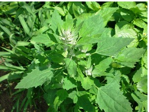
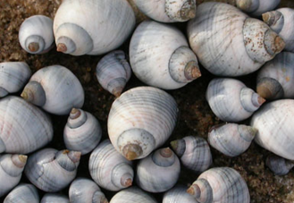
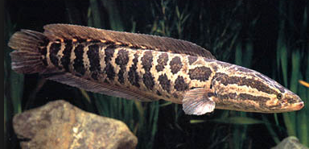

Lamb's Quarters
Chenopodium album
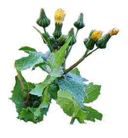Sow Thistle
Sonchus asper
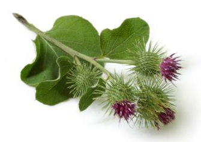Burdock
Arctium spp.
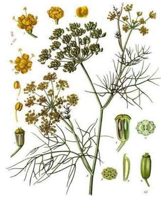Wild Fennel
Foeniculum vuldare
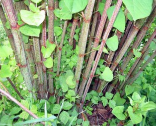Japanese Knotweed
Polygonum cuspidatum
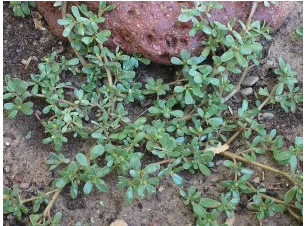Purslane
Portulaca oleracea
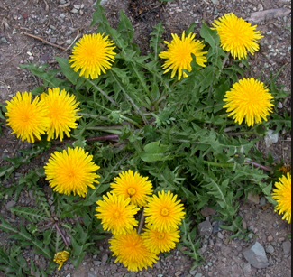Dandelion
Taraxacum officinale
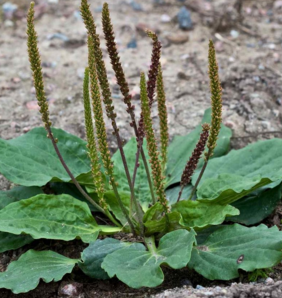Broadlead Plantain
Portulaca oleracea
Sea
Periwinkle
Littorina littorea
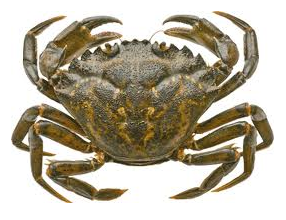Green Crab
Carcinus maenas
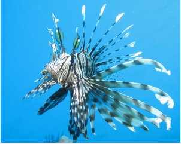Lionfish
Pterois volitans and Pterois miles (pictured)
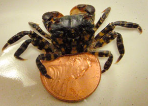Asian Shorecrab
Hemigrapsus sanguineus
Fresh
Northern SnakeHead
Channa argus